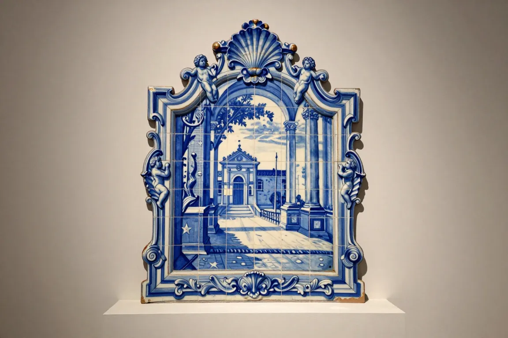

Расписные плитки с оловянной глазурью, покрывающие стены церквей, дворцов и улиц Португалии и Испании. Художник работает синим или многими цветами по белой глазури, и одна сцена идёт через множество плиток.

Главная идея
Стена становится картиной, когда много квадратных плиток расписывают как одну сцену по белой оловянной глазури.
Принципы дизайна
Пишите сцену по сырой оловянной глазури, чтобы каждый мазок сох сразу и не поддавался правке.
Планируйте сцену на сетке квадратных плиток, около 13–15 см каждая, и нумеруйте плитки на обороте.
Берите один кобальтовый синий для повествовательных панелей; берите много цветов для узорных ковров.
Повторяйте узорную плитку группой 2 на 2 или 4 на 4, чтобы получить ковёр из звёзд и цветов.
Обрамляйте большую панель расписными волютами, раковинами, путти и карнизом.
Покрывайте стену до потолка или до панели высотой около 1,5 м, без голых пятен.
Держите черепок плитки тонким, а глазурь толстой, около 0,5 мм.
Берите смелые синий и жёлтый в ранних узорных плитках и мягкий синий в панелях XVIII века.